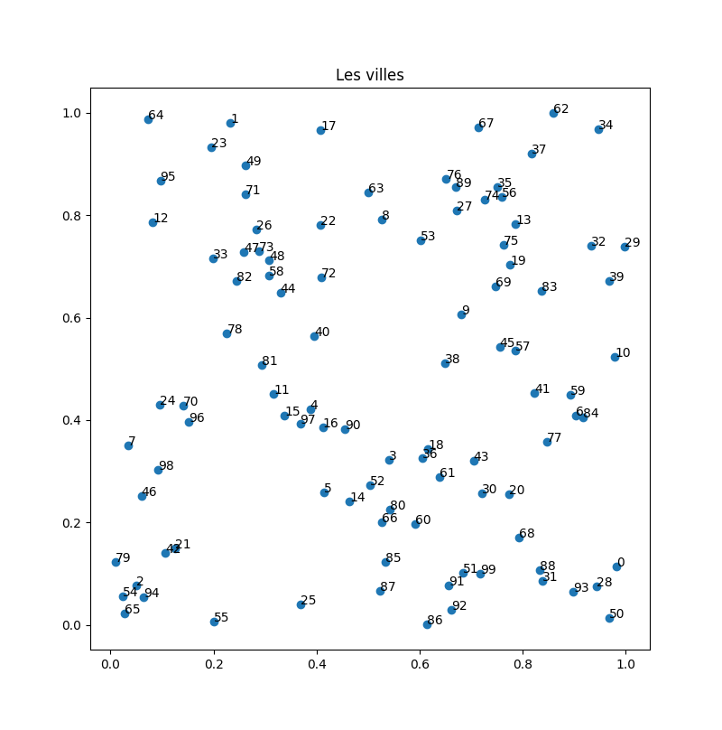

Étude
Les différents algorithmes que nous allons voir sont pour la plupart des cas particuliers d'algorithmes plus généraux de la théorie des graphes.
Les algorithmes présentés sont de plus pas forcément les meilleurs en terme de complexité.
Le problème que nous voulons résoudre est la création d'un réseau ferré. On reprend les notations utilisées lors de la partie consacrée à la programmation dynamique :
Dans la partie programmation dynamique on s'intéressait à un réseau déjà créé, ici, on va le construire.
Problème
Étant donné un ensemble de villes $V$ décrites par leurs coordonnées GPS et un prix de construction de tronçon entre deux gares proportionnelle au kilomètre, comment relier les gares des villes entres-elles au prix le plus bas ?
Par exemple les 5 villes ci-dessous :

Aucun tronçon n'a été construit et on ne peut voyager de ville en ville.
Dans la figure ci-dessous un réseau ferré a été construit. À gauche toutes les tronçons possibles ont été construites, ce qui est pratique si ont veut voyager vite entre deux villes mais c'est beaucoup trop cher (et dangereux, regardez le nombre de croisements !). À droite seul le nombre minimum de tronçons entre villes voisines pour pouvoir aller de n'importe quelle ville à n'importe quelle autre ville en suivant le réseau ferré ont été construites.

Pourquoi est-on sur que la figure de droite possède le nombre minimum de tronçons ?
corrigé
corrigé
Si on supprime une tronçon (n'importe laquelle) dans la figure de droite, on déconnecte le réseau en deux.
Alors que dans la figure de gauche on peu au minimum supprimer 4 tronçons (tous les tronçons partant d'une ville) et au mieux 6 (pour arriver à la figure de droite).
Nuages de points
Nous allons dans les exemples qui suivent utiliser le même jeu de données. Nous avons généré en python 100 points en deux dimensions dont les abscisses et ordonnées sont entre 0 et 1.

code python
code python
Code python pour générer les 100 villes que l'on stocke dans un dictionnaire :
import random
villes = dict()
for nom in range(100):
villes[str(nom)] = (random.random(), random.random())
return villesPuis que l'on affiche avec matplotlib :
import matplotlib.pyplot as plt
TAILLE = 10
x = []
y = []
label = []
for nom, (long, lat) in villes.items():
x.append(long)
y.append(lat)
label.append(nom)
height = max(y) - min(y)
width = max(x) - min(x)
fig, ax = plt.subplots(figsize=(TAILLE, TAILLE * height / width))
ax.set_title("Les villes")
ax.scatter(x, y)
for i in range(len(x)):
ax.text(x[i], y[i], label[i])
for x, y in segments:
ax.plot(
[villes[x][0], villes[y][0]],
[villes[x][1], villes[y][1]],
color=mcolors.CSS4_COLORS["brown"],
)
plt.show()Pour ce qui va suivre, une hypothèse souvent utilisée est :
L'ensemble des points est en position générale, c'est à dire que 3 points ne sont jamais alignés.
Ce n'est pas une contrainte forte puisque la probabilité que ça arrive est nulle (si on tire au hasard des coordonnées réelles aux points), et – même si ça arrivait – il suffirait de déplacer un des trois points d'epsilon pour que ça n'arrive plus.
La raison fondamentale de cette hypothèse est que :
Si $P$ est un ensemble de points en position générale, alors pour toute paire de points $x, y \in P$ aucun autre point de $P$ n'est sur le segment entre $x$ et $y$.
Ceci va simplifier nombre de preuves de ce qui va suivre.
Connexité
Le but final est d'obtenir un réseau ferré où l'on puisse librement aller d'une ville à l'autre. Formalisons ceci en commençant par étudier des réseaux ferrés déjà constitués
Un réseau ferré de villes est connexe si quelque soient deux villes $x$ et $y$, il existe un chemin entre $x$ et $y$.
On reprend la relation $C$ du deuxième exemple de la partie consacrée à la programmation dynamique :
Le fait que la relation chemin soit une relation d'équivalence montre que le réseau ferré est connexe si et seulement si cette relation n'admet qu'une seule classe d'équivalence ($C(x) = C(y)$ quelques soient les villes $x$ et $y$).
définition
Si $C$ est une relation d'équivalence sur $V$, la classe d'équivalence de $x \in V$ est :
$$ C(x) = \{ y | C[x][y] == \text{Vrai}, y \in V \} $$
Si un réseau ferré n'est pas connexe, les classes d'équivalences de la relation chemin donnent les composantes connexes du réseau ferré. Le réseau ferré de la figure suivante contient 2 composantes connexes :

Notez que :
Si $V_1$ et $V_2$ sont deux composantes connexes d'un réseau ferré alors :
- $V_1 \cap V_2 = \emptyset$
- si on ajoute un tronçon entre une ville de $V_1$ et une ville de $V_2$, alors $V_1 \cup V_2$ devient une composantes connexe du nouveau réseau
Par exemple, en ajoutant le tronçon entre B et P, on obtient un réseau ferré connexe :

La propriété ci-dessus nous permet de créer un algorithme glouton permettant de trouver toutes les parties connexes d'un réseau ferré uniquement à partir de sa relation tronçon.
Algorithme composante connexe :
pour chaque ville v : R(v) = v
pour chaque tronçon (x, y):
si R(x) ≠ R(y):
pour chaque gare z telle que R(z) = R(y):
R(z) = R(x)Lorsque l'on code l'algorithme il arrive souvent que l'on écrive changement de marques :
pour chaque ville u:
si R(u) == R(x) alors:
R(u) = R(y)Qui est faux.
Pourquoi est-ce faux ?
solution
solution
Si u vaut x, on change sa marque et plus aucun changements ne sera effectué pour les villes suivantes.
Il faut stocker la valeur test :
à_changer = R(x)
pour chaque ville u:
si R(u) == à_changer alors:
R(u) = R(y)Cet algorithme fonctionne grâce à la marque R qui définit le représentant de chaque ville. Montrons ça sur un exemple en reprenant le réseau ci-après et en affectant une couleur à chaque ville comme représentant :

Et en étudiant les tronçons dans l'ordre $(L, S)$, $(B, M)$, $(P, S)$ et enfin $(L, P)$ on obtient :

Notez que l'étude du tronçon $(L, P)$ ne produit aucun changement dans les représentants car la couleur de $L$ est déjà égale à la couleur de $P$.
A la fin de l'algorithme composantes connexes les villes ayant même valeur de $R$ forment une composante connexe.
preuve
preuve
On le prouve par récurrence sur le nombre de segments examinés :
Après $k$ tronçons examinés, les composantes connexes du réseau formé de ces $k$ tronçons sont les ensembles de villes ayant même valeur de $R$
- Lorsqu'il n'y a aucun tronçon examinée chaque ville a un représentant différent ce qui représente bien les composantes connexes d'un réseau vide
- À chaque fois que l'on ajoute un tronçon :
- soit les deux villes ont même représentant et l'hypothèse de récurrence stipule qu'elles sont dans la même composante connexe
- soit les deux villes ont un représentant différent et l'hypothèse de récurrence stipule qu'elles sont dans des composantes connexes différentes. L'ajout du tronçon regroupe les deux composantes en une seule, ce que l'on fait en leur associant un même représentant
Montrez qu'il ne peut y avoir plus de $n-1$ fois où la ligne 3 de l'algorithme est vérifiée.
corrigé
corrigé
À chaque fois que la ligne 3 de l'algorithme est vérifiée on regroupe deux composantes connexes. Or au départ il y en a $n$ et à la fin il ne peut y en avoir au minimum 1.
En déduire que la complexité d l'algorithme est en $\mathcal{O}(n^2)$
corrigé
corrigé
Il y a au pire $\frac{n(n-1)}{2}$ segments (un pour chaque couple) et la condition de la ligne 3 n'est vrai qu'au maximum $n-1$ fois.
Création du réseau ferré
définition
- le coût de construction d'un tronçon entre deux gares $x$ et $y$ est $K \cdot d(x, y)$ où $d(x, y)$ est la distance entre les coordonnées géographiques de $x$ et de $y$
- le coût de construction d'un réseau ferré est la somme des coûts de construction des tronçons qui le composent.
On peut maintenant reformuler notre problème d'optimisation :
Problème
Trouver un réseau ferré de coût de construction minimum pour notre ensemble de villes.
L'analyse préliminaire précédente nous permet d'aborder sereinement ce problème d'optimisation. On peut utiliser l'algorithme "composante connexe" en choisissant l'ordre dans lequel examiner les tronçons.
Cet ordre semble évident puisque l'on veut minimiser le coût : on examine les tronçons par coût croissant.
Commençons par écrire cet algorithme, initialement proposé par Kruskal :
pour chaque ville v : R(v) = v
pour chaque tronçon (x, y) examiné par distance croissante:
si R(x) ≠ R(y):
on ajoute (x, y) aux tronçons choisis
pour chaque ville z telle que R(z) = R(y):
R(z) = R(x)L'étude précédente nous indique d'ores et déjà que :
- on choisira exactement $n-1$ tronçons
- le reseau ferré formé des tronçons choisies sera connexe
Pour nos 100 villes, on trouve :

code python de l'affichage
code python de l'affichage
On suppose que l'algorithme de Kruskal nous rend une liste tronçons dont les éléments sont des couples $(v1, v2)$ avec $v1$ et $v2$ des noms de villes.
Pour les prendre en compte dans le graphique, il faut créer des segments de coordonnées utilisable par la fonction plot.
On en a aussi profité pour changer de couleur en utilisant cette documentation
import matplotlib.pyplot as plt
import matplotlib.colors as mcolors
TAILLE = 10
x = []
y = []
label = []
for nom, (long, lat) in villes.items():
x.append(long)
y.append(lat)
label.append(nom)
height = max(y) - min(y)
width = max(x) - min(x)
fig, ax = plt.subplots(figsize=(TAILLE, TAILLE * height / width))
ax.set_title("Les villes")
ax.scatter(x, y)
for i in range(len(x)):
ax.text(x[i], y[i], label[i])
for x, y in tronçons:
ax.plot(
[villes[x][0], villes[y][0]],
[villes[x][1], villes[y][1]],
color=mcolors.CSS4_COLORS["brown"],
)
plt.show()Avant de montrer que l'algorithme de Kruskal est optimal, commençons par montrer une propriété intéressante de ce réseau :
Propriété
Le réseau ferré donné par l'algorithme de Kruskal ne contient pas de cycle.
preuve
preuve
S'il contenait un cycle, lors de l'ajout du dernier tronçon $(x, y)$ on aurait $R(x) = R(v)$ ce qui est impossible.
Montrons que l'algorithme est bien optimal :
L'algorithme de Kruskal produit un réseau de construction connexe à coût de construction minimal.
preuve
preuve
L'algorithme de Kruskal est un algorithme glouton, prouver son optimalité se fait en utilisant les techniques du cours :
- On suppose que l'algorithme n'est pas optimal
- On se donne une solution optimale qui coincide le plus longtemps possible avec la solution donnée par l'algorithme glouton
- on prouve que l'on peut échanger un élément de la solution optimale par le choix du glouton pour forger une solution optimale coïncidant plus longtemps avec celle-ci
- contradiction
Soit $[r_1, \dots, r_{n-1}]$ la liste des tronçons choisies par Kruskal dans cet ordre. On suppose que ce n'est pas optimal et qu'il existe un réseau ferré de coût de construction strictement plus petit.
Parmi tous les réseaux optimaux, on en choisit un qui coincide le plus longtemps possible avec notre algorithme glouton : $[r'_1, \dots, r'_m]$
On commence par remarquer que :
- $m \geq n-1$ sinon le réseau ne peut être connexe
- si $r_i = r'_i$ pour $1\leq i \leq n-1$ alors le réseau optimal ne l'est pas puisque la solution donnée par Kruskal est connexe.
Les deux remarques précédentes nous indiquent qu'il existe $1 \leq i^\star < n-1$ tel que :
- $r_i = r'_i$ pour $1\leq i < i^\star$
- $r_{i^\star} \neq r'_{i^\star}$
Notons $r_{i^\star}=(x, y)$. Si l'on supprime $r_{i^\star}$ du réseau obtenu par Kruskal, on déconnecte le réseau en 2 composantes connexes $X$ et $Y$ avec $x \in X$ et $y\in Y$ :

Chaque ville est donc soit dans la composante connexe $X$ soit dans la composante connexe $Y$. En représentant ceci dans le réseau optimal on a :

Les éléments de $X$ (en orange) et de $Y$ (en bleu) ne forment pas des composantes connexes dans le réseau optimal, mais en considérant le chemin allant de $x$ à $y$ dans ce réseau il existe un tronçon dont une dés extrémités est dans $X$ et l'autre dans $Y$ (puisque $x$ est orange et $y$ est bleu il y a bien un moment où les couleurs vont se croiser).
Notons cet tronçon $(u, v)$ (avec $u \in X$ et $v \in Y$). Par construction, ce tronçon ne peut être dans la solution obtenue par l'algorithme de Kruskal (les extrémités de toutes les tronçons sont de même couleur, à par pour le tronçon $(x, y)$). De plus lors du choix de $r_{i^\star}$, on avait $R(u) \neq R(v)$ (sinon il existerait un chemin reliant $u$ à $v$ pour le réseau de Kruskal ne passant pas par $(x, y)$ ce qui est impossible) : si l'algorithme a choisi $(x, y)$ plutôt que $(u, v)$ c'est que $d(u, v) \geq d(x, y)$.
Tout ce qui précède montre que l'on peut supprimer le tronçon $(u, v)$ du réseau optimal (on le déconnecte en 2 parties $U$ et $V$ avec $u, x \in U$ et $v, y \in V$) puis y ajouter le tronçon $(x, y)$ pour le reconnecter :

Au final, on obtient :
- un réseau connexe
- de coût inférieur au réseau optimal
- qui coincide plus longtemps avec l'algorithme obtenu pas Kruskal
Ce qui est une contradiction puisque le nouveau réseau coïncide plus longtemps avec celui obtenu par Kruskal.
Le réseau obtenu par l'algorithme de Kruskal est optimal ! Il a alors la propriété de ne pas contenir de croisements (de segments qui s'intersectent).
Un réseau ferré de coût de construction minimal n'a pas d'intersection de segments
preuve
preuve
Supposons que le segment $(u, v)$ croise le segment $(x, y)$ dans une solution optimale. On se retrouve alors dans le cadre de la figure ci-dessous :

Avec $uxvy$ qui forme un quadrilatère convexe.
En supprimant le segment $(x, y)$ du réseau on déconnecte $x$ de $y$. Les deux villes $u$ et $v$ se retrouvent alors dans la même composante connexe, disons celle de $y$. En supprimant ensuite le segment $(u, v)$ on déconnecte $u$ de $v$ et on peut supposer sans perte de généralité que $y$ se retrouve dans la composante connexe de $v$.
On en conclut que les 3 segments $(x, u)$, $(x, v)$ et $(y, u)$ ne font pas partie du réseau et qu'en supprimant les segments $(x, y)$ et $(u, v)$ de celui-ci on obtient 3 composantes connexes :
- la composante connexe $A$ contenant $x$
- la composante connexe $B$ contenant $u$
- la composante connexe $C$ contenant $y$ et $v$

Le quadrilatère $uxvy$ étant convexe, on a que $d(x, y) + d(u, v) > d(x, v) + d(u, y)$ et donc en ajoutant les segments $(x, v)$ et $(u, y)$ on reconnecte le réseau et il est de coût strictement inférieur.
Chemins entre villes
Le réseau de coût de construction minimal est connexe et ne contient pas de cycle. Il n'existe donc pour chaque couple de villes qu'un unique chemin.
L'algorithme que l'on va créer dans les exercices suivants et qui permet soit de visiter toutes les villes soit de trouver un chemin entre deux villes est connu sous le nom de parcours en profondeur. Il est très efficace et utilisé dans de nombreuses occasions.
En utilisant la méthode du backtracking (on va le plus loin possible et dès que l'on se retrouve dans une impasse on rebrousse chemin), décrivez un algorithme permettant, à partir d'une ville de départ, de parcourir tout le réseau en suivant uniquement les tronçons. Il devra afficher à l'écran la ville où l'on se trouve.
Cet algorithme doit être récursif. Il doit parcourir toutes les tronçons et se relancer dès qu'il trouve un tronçon permettant de progresser, c'est à dire un tronçon dont une des extrémités est la ville courante et l'autre extrémité n'est pas la ville d'où l'on vient.
Cet algorithme doit donc avoir comme paramètre :
- la ville courante
- la ville précédente (pour éviter de rebrousser chemin)
corrigé
corrigé
fonction tronçons_rec(précédente, courante):
affiche à l'écran : courante
pour chaque tronçon (u, v) du réseau ferré:
si u == courante et v != précédente:
tronçons_rec(u, v)Prenons par exemple le réseau ci-dessous :

Avec 1 comme ville de départ et en supposant l'on regarde les villes par ordre croissant :
trouve_rec(1, 1). Il va afficher 1, puis exécuter :trouve_rec(1, 2):- va afficher 2
- puis va exécuter :
trouve_rec(2, 3)- va afficher 3
- s'arrête, l'algorithme ne peut pus progresser
trouve_rec(2, 4):- va afficher 4
- s'arrête, l'algorithme ne peut pus progresser
trouve_rec(1, 5)- va afficher 5
- s'arrête, l'algorithme ne peut pus progresser
trouve_rec(1, 6):- va afficher 6
- s'arrête, l'algorithme ne peut pus progresser
Une fois toutes ces récursions effectuées, l'algorithme s'arrête.
En utilisant le réseau exemple, et en partant de 0, on peut par exemple parcourir (et afficher) les villes dans l'ordre suivant :
[ '0', '28', '93', '31', '88', '68', '20', '30', '43', '61', '36', '18',
'3', '52', '14', '5', '80', '66', '85', '87', '25', '60', '90', '16',
'4', '97', '15', '11', '81', '78', '82', '47', '73', '48', '58', '44',
'72', '22', '63', '8', '53', '27', '89', '76', '74', '56', '35', '37',
'62', '34', '67', '13', '75', '19', '69', '9', '45', '57', '41', '59',
'6', '84', '77', '10', '38', '83', '32', '29', '39', '17', '40', '26',
'71', '49', '23', '1', '95', '12', '64', '33', '70', '96', '24', '7',
'98', '46', '42', '21', '2', '94', '55', '54', '65', '79', '99', '51',
'91', '92', '86', '50']Améliorez la méthode précédente pour qu'elle rende le chemin parcouru. Pour cela ajoutez un paramètre chemin à l'algorithme qui va grandir à chaque nouvelle ville visitée.
Pour cela, vous ajoutez un chemin en paramètre, qui sera passé à toutes les récursions de l'algorithme. Ce chemin sera modifié à chaque progression (c'est à dire lorsqu'une nouvelle ville est découverte, donc lorsque le précédent algorithme l'affichait à l'écran).
Il est indispensable que l'objet soit modifié et non recréer pour que toutes les récursions de l'algorithme partagent le même objet.
corrigé
corrigé
fonction tronçons_rec(précédente, courante, chemin):
ajoute courante à la fin du chemin
pour chaque tronçon (u, v) du réseau ferré:
si u == courante et v != précédente:
tronçons_rec(u, v, chemin)L'algorithme récursif ne va pas rendre quelque chose, mais il va modifier petit à petit le paramètre chemin. On exécute alors la fonction de la façon suivante :
chemin = []
tronçons_rec(1, 1, chemin)
affiche à l'écran : cheminL'algorithme va afficher l'ordre de passage de chaque ville. Si cet ordre est identique à l'exercice précédent il affichera :
[1, 2, 3, 4, 5, 6]On veut maintenant chercher une ville particulière et arrêter les récursions une fois cette ville trouvée.
La pile de récursion (les algorithmes lancés mais pas encore terminés) contiennent exactement le chemin entre cette ville et le départ. Trouvez un moyen pour le récupérer.
Par exemple :
- commencer comme précédemment par un chemin vide
- ajouter la destination à la fin du chemin une fois celle-ci trouvée (le chemin est alors non vide et contient juste lq destination) puis sortir de l'algorithme
- à chaque retour de récursion (la ligne suivant un appel de récursion), si le chemin est non vide, ou ajoute la ville courante à la fin du chemin et on sort de l'algorithme.
corrigé
corrigé
fonction tronçons_rec(précédente, courante, destination, chemin):
si courante == destination:
ajoute courante à la fin de chemin
retour
pour chaque tronçon (u, v) du réseau ferré:
si u == courante et v != précédente:
tronçons_rec(u, v, destination, chemin)
si chemin est non vide:
ajoute courante à la fin de chemin
retour
Si cet ordre est identique à l'exercice précédent, en lançant l'algorithme avec :
chemin = []
tronçons_rec(1, 1, 4, chemin)
affiche à l'écran : cheminIl affichera :
[4, 2, 1]On affiche le chemin entre les villes 0 et 1 de l'exemple :

Cycles
Le réseau ferré de coût de construction minimum est parfait pour relier les villes à moindre coût. En revanche, il n'est pas robuste aux pannes ou aux blocages. Un seul tronçon de bloqué et le réseau n'est plus connexe.
L'idée est alors de chercher un cycle reliant toutes les villes. Pour tout couple de ville, il existe alors deux chemins disjoints permettant de les relier.
Ce problème est cependant souvent vu sous un autre angle, celui d'un voyageur de commerce voulant visiter toutes les villes :
Problème du voyageur de commerce
Étant donné un ensemble de villes, trouver l'itinéraire le plus court passant par chaque ville une et une seule fois.
Sous la forme d'un problème d'optimisation on cherche, pour un ensemble de villes $V$ donné, un cycle $v_1 v_2\dots v_1$ passant par toutes les villes 1 fois minimisant la quantité :
$$ \sum_{i=1}^nd(v_i, v_{i+1}) + d(v_n, v_1) $$
Combien de solutions possibles possède un problème du voyageur de commerce à $n$ villes ?
solution
solution
Pour un départ fixé, une permutation des $n - 1$ villes restante produit une solution. Comme la permutation opposée revient à parcourir le cycle dans l'autre sens, il y a $\frac{(n-1)!}{2}$ solutions possibles.
Pour nos 100 ville, cela fit de l'ordre de $4.66\cdot 10^{155}$ solutions possibles.
Algorithme optimal
Générer tous les cycles prend énormément de temps.
Quel est la complexité d'un algorithme énumérant tous les cycles pour en trouver le moins coûteux ?
solution
solution
Une fois un cycle trouvé, il faut $\mathcal{O}(n)$ opérations pour trouver son coût. Comme il y a $\frac{(n-1)!}{2}$ cycles possibles, la complexité est de l'ordre de $\mathcal{O}(n!)$
On va de plus considérer des cycles objectivement mauvais car ayant des croisements. Par exemple tous les cycles ayant comme chemin $[\dots, 50, 64, 34, 65, \dots]$ (les 4 coins de la carte) seront plus mauvais que les mêmes cycles ayant $[\dots, 50, 34, 64, 65, \dots]$ :
Un cycle optimal est composé de chemins optimaux.
Cette constatation nous incite à utiliser le principe de la programmation dynamique pour résoudre notre problème. Le principe de création d'algorithmes utilisant la programmation dynamique est toujours le même : on essaie de créer des solutions optimales avec des solutions partielles elles-même optimales. Ceci se concrétise souvent par une équation récurrente à vérifier.
Dans le cas de notre problème du voyageur de commerce à $n$ villes $(v_i)_{1\leq i \leq n}$, on peut construire un algorithme de programmation dynamique en remarquant que :
Soit $I$ un sous ensemble de $[1, n]$ contenant $1$, et $j\notin I$.
Si l'on note $C(I, j)$ le coût d'un plus court chemin allant de $v_1$ à $v_j$ en utilisant que des villes de $\{ v_i \mid i \in I \}$, on peut écrire :
L'équation ci-dessous nous donne un moyen de construire itérativement des chemins minimaux jusqu'à arriver au calcul final :
Qui est le coût minimal du voyageur de commerce.
En supposant que l'on connaisse $C(I, j)$ pour tous les sous-ensembles $I$ à $k$ éléments et tous les $j$, écrivez l'algorithme qui calcule tous les $C(I', j)$ pour tous les sous-ensembles $I'$ à $k+1$ éléments.
solution
solution
On a :
Comme j n'est pas dans $I'$, ceci est équivalent à :
On peut donc écrire :
pour chaque I de E:
pour chaque l de [1..n] qui n'est pas dans I:
pour chaque j de [1..n] qui n'est pas dans I et qui n'est pas l:
m = C(I, l) + c(v_l, v_j)
si C(I + {l}, j) n'existe pas:
C(I + {l}, j) = m
sinon:
C(I + {l}, j) = min(C(I + {l}, j), m)La complexité de cet algorithme est en $\mathcal{O}((n-k)(n-k-1))$ pour chaque élément de $E$ et comme il y en a $2^k$ éléments, la complexité totale de cet algorithme est :
$$ \mathcal{O}(2^k(n-k)^2) $$
Écrivez l'algorithme de résolution du problème du voyageur de commerce itérativement en partant de l'ensemble $E = {{1}}$.
Montrez que sa complexité peut être estimée à $\mathcal{O}(n^22^n)$.
solution
solution
Il suffit d'appliquer itérativement l'algorithme précédent jusqu'à obtenir $C(I, k)$ pour tous les sous-ensembles à $n-1$ éléments contenant 1.
La complexité totale est donc : $\mathcal{O}(\sum_{k=1}^{n-1}2^k \cdot (n-k)^2) = \mathcal{O}(n^22^n)$
Cette complexité est importante, mais tout de même plus petite que l'énumération de tous les cycles ($2^n$ est très petit devant $n!$) puisque l'on ne garde qu'une solution pour un sous-ensemble donné et pas tous les cycles possibles.
Trouver la solution optimale pour un ensemble de ville de 100 est impossible avec un unique ordinateur personnel. Nous ne sommes donc pas en mesure de donner le coût minimum pour notre exemple fil rouge.
Algorithme glouton
Le nombre astronomique de solutions possibles nous empêche de toutes les essayer. De plus, on peut montrer (nous ne le ferons pas ici) qu'il est illusoire de trouver une solution exacte (du moins pendant une séance de code) car le problème du voyageur de commerce est NP-complet (plus précisément NP-difficile, mais ne chipotons pas).
Couramment, l'algorithme glouton utilisé pour approximer ce problème est :
- choisir une ville de départ qui constitue le départ du cycle
- tant que toutes les villes n'ont pas été ajoutée au cycle : on ajoute la ville la plus proche du dernier élément de celui-ci.
Pour notre exemple, on trouve, en partant de la ville $0$ (la dernière ville traversée est la $17$):

On obtient, pour K =1, un coût de construction de : 10.475838825929351
On voit bien que l'algorithme n'est pas vraiment optimal...
Exhibez un exemple simple pour lequel l'algorithme glouton ne trouvera jamais la solution optimale.
Solution
Solution
En utilisant la distance euclidienne, l'algorithme glouton ne trouvera jamais la bonne solution pour les 6 points de la figure suivante :

Optimisation
La représentation graphique de la solution montre de nombreux croisements, ce qui prouve que notre solution est bien améliorable :
Proposition
Une solution du problème du voyageur de commerce n'a pas de croisements.
preuve
preuve
Supposons qu'un cycle comporte un croisement. On peut alors sans perte de généralité considérer que l'on est dans le cas ci-après :

Le quadrilatère $xvyu$ est alors convexe et en supprimant les segments $(x, y)$ et $(u, v)$ on obtient les composantes connexes $A$ et $B$. Le cycle ci-après, obtenu en changeant les diagonales du quadrilatère par deux de ses côtés, est alors strictement meilleur :

C'est l'idée sous-jacente de la méthode d'optimisation 2-opt :
- trouver un cycle potentiel
- chercher un croisement et le supprimer
- retour en 2
On peut itérativement chercher les croisements jusqu'à leurs disparitions complète, ou prendre un certain nombre de couples de segments et le décroiser si nécessaire. C'est cette dernière façon de faire qui est privilégiée pour de grands cycles.
Par exemple ci-dessous, on a décroisé les segment $(0, 17)$ et $(37, 50)$ :

Notre cycle étant très petit, on peut se permettre de faire tous les cas. La figure suivante montre le résultat de 100 itérations de tous les cas possibles (on exécute 100 fois un test de tous les décroisements possibles) :

On obtient, pour K =1, un coût de construction de : 8.606090557637186
C'est bien mieux, et il n'y a plus de croisements.
Sans croisement ne veut pas forcément dire optimal !
Algorithmes à performances garanties
L'algorithme glouton précédant ainsi que son optimisation ne garantissent rien sur la solution. Il existe cependant des algorithmes heuristiques dont on peut garantir la performance.
On peut commencer par donner une borne min du coût du voyageur de commerce :
Montrer que le coût du voyageur de commerce est plus grand que le coût du réseau connexe optimal
preuve
preuve
Le cycle est est réseau connexe, son coût est donc forcément plus important.
Du réseau au cycle
L'idée est de reprendre le réseau optimal et de le parcourir entièrement en suivant ses tronçons. Par exemple, en considérant le réseau ci-dessous :
On peut le parcourir en suivant ses tronçons de cette façon par exemple :

Ce qui donne le cycle :
$$ [1, 2, 3, 2, 4, 2, 1, 5, 1, 6] $$
Il parcours 2 fois le réseau son coût est donc de deux fois le coût du réseau connexe optimal.
En supprimant les sommets déjà parcourus, on obtient le cycle :
$$ [1, 2, 3, 4, 5, 6] $$
Remarquez que c'est l'algorithme du parcours en profondeur qui ajoute dans chemin toutes les villes parcouru permet de trouver ce cycle.
Le coût de ce parcours est plus faible que le parcours précédent (on a une distance, donc elle respecte l'inégalité triangulaire). On en conclut que :
propriété
Le coût du cycle issu du parcours du réseau optimal est au pire deux fois plus grans que le cycle optimal.
Le parcours donne, sur nos 100 villes :

On obtient, pour K =1, un coût de construction de : 10.608836994373258
Ce qui après optimisation (100 passes) devient :

On obtient, pour K =1, un coût de construction de : 8.596669623756684
Algorithme de Christofides
L'algorithme de Christofides est une amélioration de l'algorithme précédent. On peut montrer qu'il est au pire 1.5 fos plus mauvais que le cycle optimal.
C'est de plus la meilleure approximation connue. Son étude nécessite cependant des connaissance en théorie des graphes que nous n'avons (pour l'instant) pas.
Autre parcours
cycle bitonique exo 9 https://wkerl.me/cours/ouv_td.pdf